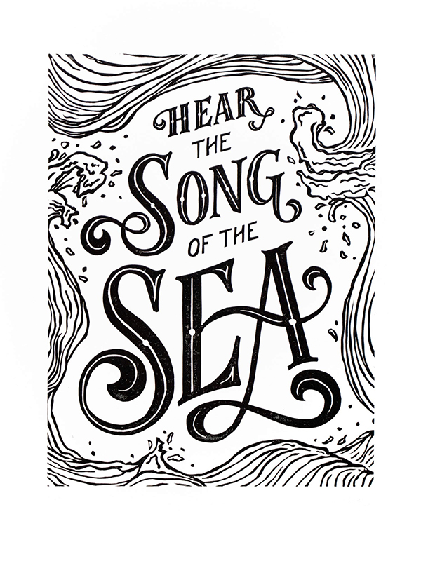
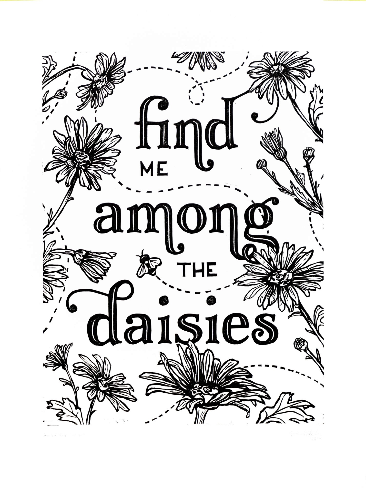
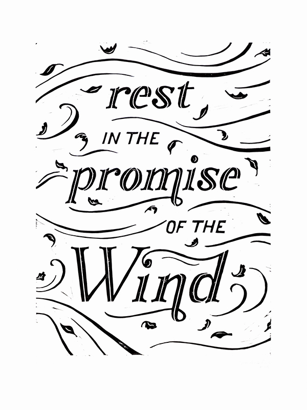
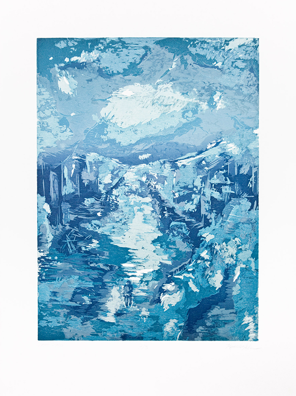

Kimber
Alberta-based artist inspired by stories, nature, memories, and faith.

Song of the Sea. Linocut. 2019.

Among the Daisies. Linocut. 2019.

Promise of the Wind. Linocut. 2019.

Liminal Spaces. Reduction Woodcut. 2012.